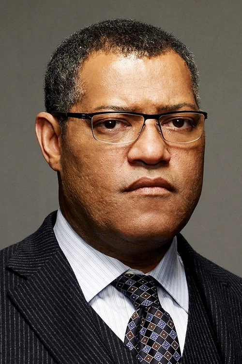
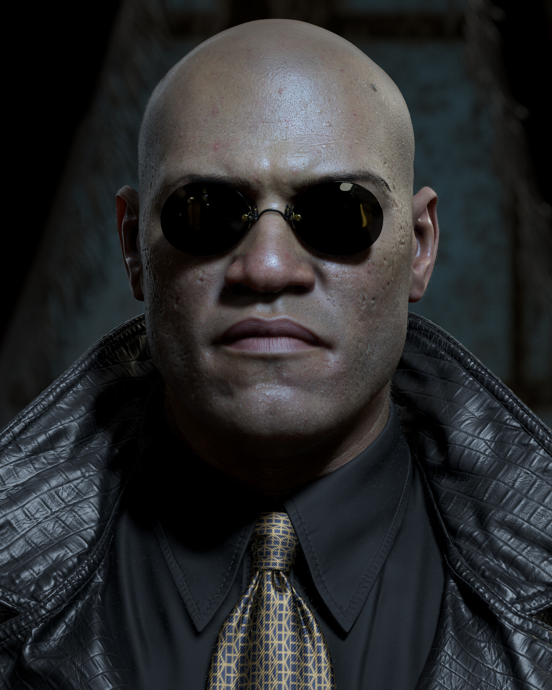
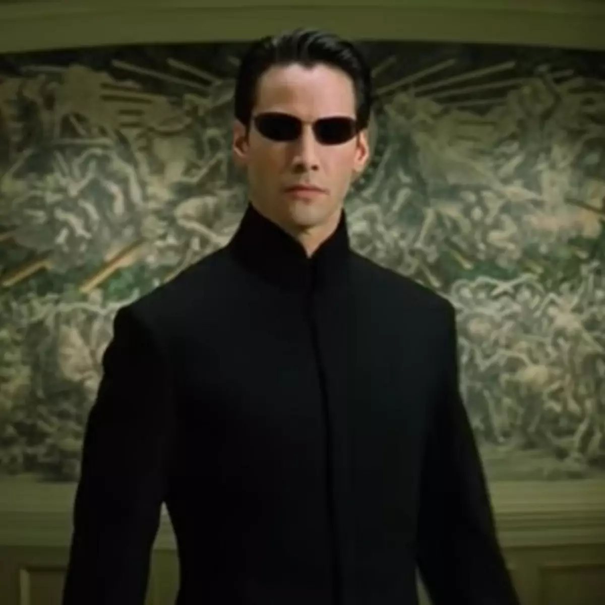
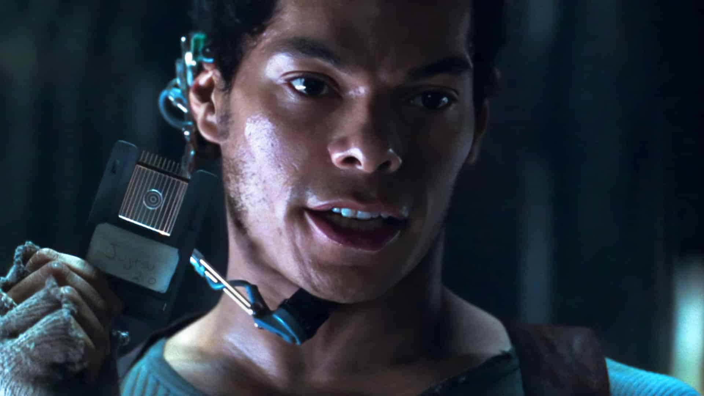

Laurence Fishburne
Carrie-Anne-Moss
Keanu Reeves
Hugo Weaving
Marcus Chong

Morpheus
Líder da tripulação da Nabucodonosor e um dos principais responsáveis por libertar pessoas da Matrix. Acredita que Neo é o Escolhido.
Trinity
Habilidosa integrante da resistência humana. Trinity é especialista em tecnologia e combate e possui uma forte ligação com Neo.

Neo
Também conhecido como Thomas Anderson, é um programador que descobre a verdadeira natureza da realidade e passa a lutar contra as máquinas.

Agente Smith
Um programa da Matrix responsável por impedir que os humanos descubram a verdade. Ele considera os seres humanos uma ameaça ao sistema.

Tank
Operador da Nabucodonosor e responsável por auxiliar a tripulação durante as missões dentro da Matrix. Ele nasceu fora do sistema.